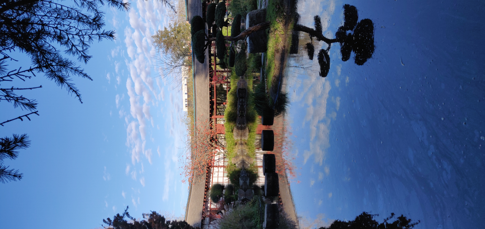
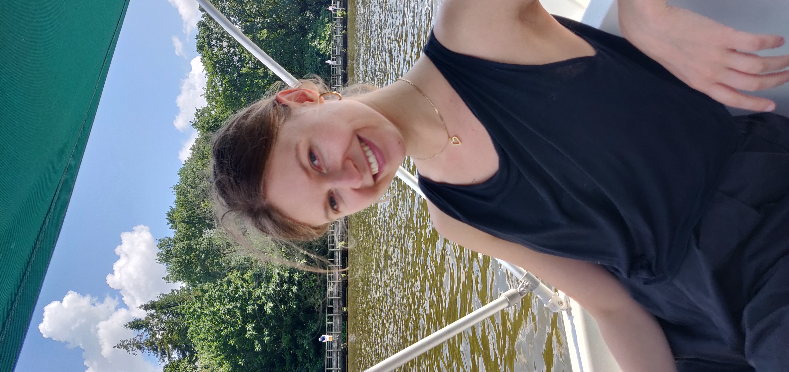
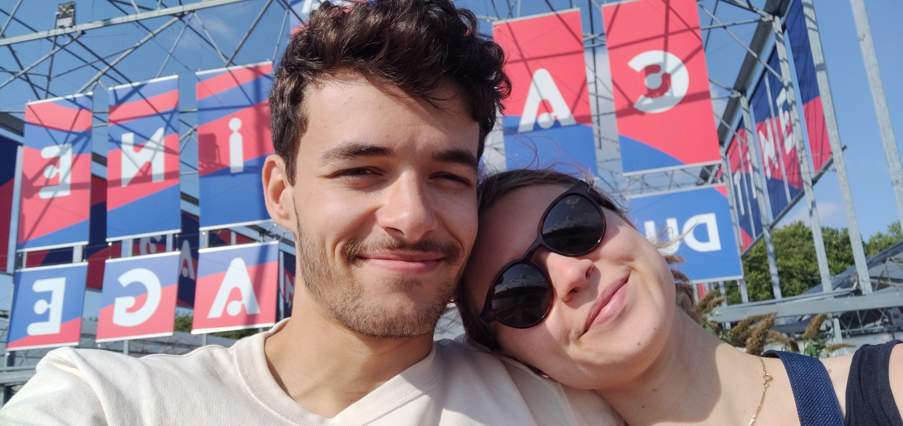

Tu te rappelles de la case du calendrier qui racontait une aventure ? Et si aujourd'hui je t'en racontais une autre.
L'histoire d'aujourd'hui, c'est celle du voyage à Nantes.
Le premier élément que je voudrais te rappeler, c'est le karma qu'on a eu cette semaine là.
Remontons le temps, nous nous balladions dans le jardin japonais de l'île de Versailles.

Là bas, nous sommes aller faire du bateau sur l'erdre, est-ce que tu te rappelles quand tu as payer et qu'ils t'ont littéralement donner de l'argent pour faire ce tour en bateau !?
Bref c'était super drôle, et la ballade était super chouette (surtout quand on a gagné la course contre l'autre couple !).

Pour continuer avec le karma, le soir on est aller mangé au "Loup, le renard et la galette", et là encore, on a eu une super "erreur" de prix, et en plus c'était super bon.
Pour finir cette histoire, on est allés sur l'île de Nantes, on y a fait du vélo mais aussi une chouette rencontre.
